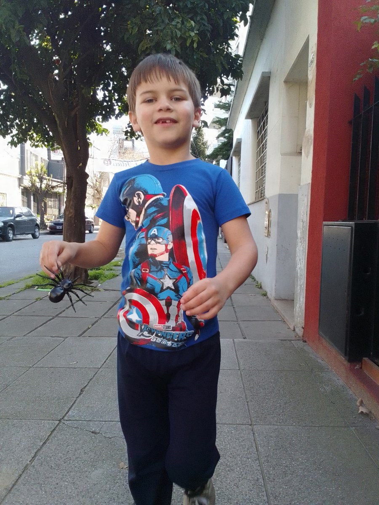

The Need for Adult Autism Housing in Paraguay
Looking beyond an available room to dependable support and an ordinary adult life.

Sam picks up little toys as we travel. Here, he's carrying a toy spider. Children like Sam will become adults of 18, 28, 38, and 48. In Paraguay and around the world, we need to plan for support throughout their lives.
Adult autism housing in Paraguay needs to mean more than an available bedroom. A useful housing arrangement connects a place to live with the support a particular adult needs, choices they can exercise, relationships they want to keep, and a credible plan for everyday care. Those parts must work together.
There is no single housing answer for every autistic adult. Some people want their own home with occasional assistance. Others need someone available throughout the day and night. Living with family can be a positive choice, but it should not have to depend on one person remaining healthy and available forever.
For a family beginning the search, the practical question is: what would make an ordinary week safe, manageable, and meaningful for this person, and who could reliably provide it? Start there before comparing buildings.
What the evidence can and cannot tell us
CDC’s 2025 report, using 2022 data, identified autism in 4.92% of 8-year-old boys across 16 U.S. monitoring communities. The previous report found 4.30% in 2020 across 11 communities. The monitoring network expanded, so the pooled figures are not a like-for-like comparison. These U.S. findings cannot establish Paraguay’s autism prevalence or the number of adult housing places it needs.
The children counted in these reports will grow into adults. In Paraguay and around the world, planning needs to look beyond childhood to support through adult life, with room for each person’s needs to change.
In its 2023 review of Paraguay, the UN Committee on the Rights of Persons with Disabilities raised concerns about community living, funding, and the lack of information on accessible housing. It called for housing alternatives connected to people’s wishes, preferences, and support networks. These are dated findings about disability broadly, not a 2026 count of housing places for autistic adults. Read the Committee’s observations, paragraphs 35–36.
The Committee calls for deinstitutionalization and community inclusion; its recommendations should not be read as an endorsement of residential developments.
That distinction matters. We should neither turn an incomplete picture into a claim that nothing exists nor treat a provider’s website as proof that a suitable place is available. This article does not offer a verified national inventory, a vacancy list, or an estimate of unmet demand.
Paraguay’s Ministry of Health also explicitly recognized autistic adolescents and adults in its April 2026 autism statement. Recognition across the lifespan is important. It is not the same as an offer of residential care, an individual service entitlement, or confirmation of local capacity.
Separate the home from the support
When comparing an option, make two lists. The first describes the home: rooms, access, noise, privacy, transport, nearby places, and the people who would share it. The second describes the support: who helps, with what, at which times, and with what backup.
A quiet room is not overnight assistance. A worker being somewhere on the property is not necessarily a worker available to help immediately. A relative living nearby is not a confirmed replacement for a paid support shift.
Ask the provider to walk through a normal weekday and weekend. Who helps the adult communicate a change of plan? How are appointments arranged? What happens if transport fails or a staff member calls in sick? What would the adult do while waiting?
The same questions apply to family-based arrangements. They are a way to find gaps, not a criticism of the care families already provide. Our guide to housing options for adults with autism and intellectual disabilities explains why the name of a housing model tells only part of the story.
Choice must be visible in daily life
A home should offer more than a welcoming tour. Look for evidence that the adult can influence what happens after moving in: the food they eat, how they spend time, who visits, how they communicate privately, and what happens when they dislike an activity.
For an adult who does not use speech, ask how preferences are understood and recorded. Observe whether supporters allow time, offer accessible choices, and recognize disagreement. A diagnosis or difficulty speaking should not be treated as permission to ignore the person.
Shared living involves compromises. Roommates may want different noise levels, routines, or amounts of company. Ask how compatibility is assessed and how conflicts are handled without automatically making one person’s needs the rule for everyone.
A small building does not by itself establish that a setting is person-centered. Rules, power, relationships, and access to the surrounding community matter too. That is a necessary test for any future Casa de SAM home as well as for other options.
Compare what is available, not only what is promised
Use the same short worksheet for every possibility:
- Adult’s priorities: What matters to this person, and how do we know?
- Actual support: Which needs can the arrangement meet now? Which needs are outside its scope?
- Coverage: What are the staffing hours, overnight arrangements, training requirements, and backup procedures?
- Ordinary life: How will the person see friends, go out, spend time alone, and keep familiar activities?
- Money: What is included, what costs extra, and what happens if funding changes?
- Accountability: Who receives concerns, investigates them, and can be contacted outside the immediate care team?
- Changing needs: What circumstances would require a different arrangement, and how would a transition be supported?
Record “not confirmed” where an answer is missing. Ask for important commitments in writing and take time to understand them before signing. Eligibility, contracts, consent, and safeguards require advice from qualified local professionals, not assumptions imported from another country.
Keep family care and outside support in the same conversation
Searching for housing does not mean deciding that family care has failed. A family may want to continue living together while bringing in more dependable help. Another adult may want to move, while keeping close family relationships. A third family may need an interim plan while exploring longer-term options.
Compare the whole arrangement, including travel time, caregiver rest, employment, and what happens during illness. A low advertised price can still leave substantial work and expense with the family. A more extensive service can still be a poor fit if it limits the person’s life or cannot meet their actual needs.
If the concern is an unavailable caregiver, planning for adults without family caregivers is a useful companion. Do not wait for a permanent housing decision to document the next workable step.
What you can do this week
Write one page about a normal day, including the support needed overnight. Add the person’s preferences and the ways they show comfort, interest, refusal, or uncertainty.
Choose one existing service or public office to contact. Ask specifically whether it works with adults with the relevant support needs and location. Request a named next contact if it does not. An organization describing autism services may focus on children or clinical appointments rather than housing.
Then identify one gap in the current arrangement and one person responsible for following it up. A useful first week ends with clearer information, not necessarily a chosen home.
Where Casa de SAM fits
Casa de SAM is in the planning and organizational stage, with a long-term goal of a residential community in Paraguay opening in 2035. It is not an operating residential service or a source of current placements. The vision must be tested against practical care, rights, staffing, sustainability, and community participation, not treated as a guarantee.
Why Casa de SAM is building homes, not an institution explains the intention behind that vision. Families need workable options now as well as thoughtful projects for the future.
This article is general planning information, not a provider recommendation or legal, medical, or financial advice. Local availability and requirements must be checked directly. Sources reviewed November 6, 2026.